Impact
Designed self-serve investor dashboards to replace a 3–5 day manual data-request process. Validated with 5 investors, who asked “When can I have this?” at every fidelity.
| My role | Sole UX designer, from research through high-fidelity prototypes |
| Team | Project manager, business systems analyst (BSA), business stakeholder, 12–15 engineers |
| Timeline | Dec 2022 – Feb 2024 |
| Tools | Figma (wireframes → hi-fi prototypes) · FigJam (assumption maps, flowcharts) · Airtable (interview + usability-test research repository) · Azure DevOps (backlog prioritization with the team) |
| Users | Investors who own loan portfolios serviced by Computershare |
The problem
Computershare services mortgage loans on behalf of investors. To know how their portfolio was doing, an investor had to email a request for each data point. A stakeholder would spend 3–5 days building spreadsheets and PDFs, then send them over FTP. The files were often too big for email and hard to read.
Investors wanted answers. They got homework.
How might we give investors insight into their portfolios in the clearest, most effective way?
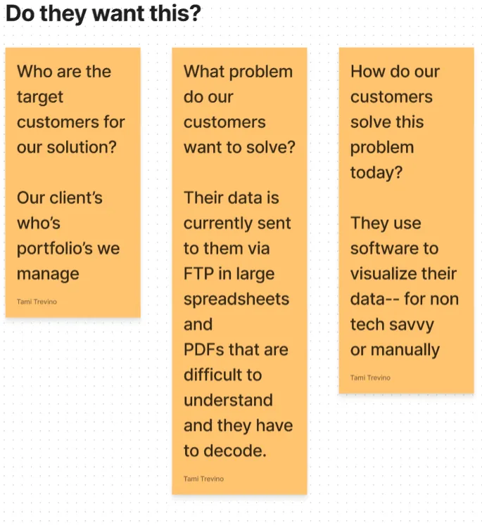
My role
This was my first role in finance. I came from retail, service and healthcare operations, so I learned mortgage servicing from scratch: UPB, delinquency buckets, loss mitigation, escrow, HELOCs. I was the only designer on a 12–15 person team. I worked closely with:
- The project manager, who ran the schedule and kept us moving
- The business stakeholder who fielded investor requests
- A business systems analyst who wrote SQL queries to pull the real data points into tables I could design from
- The lead developer and engineering team
Discovery
1. Mapping what we didn't know. I started with an assumption map: who the customers are, what problem they want solved, how they solve it today, and what could make this fail. Then I worked through the answers with my PM.
I kept every interview note and usability-test finding in Airtable, so feedback could be tagged, compared across sessions and traced back to design decisions. Prioritized work went into the team's Azure DevOps backlog.
2. Talking to the people closest to the pain. I interviewed the stakeholder who received investor requests, then wrote interview questions that were passed to investors directly.
3. Reading the artifacts. I studied the spreadsheets and PDFs investors were receiving to learn what they actually asked for.
4. Making the user real. I built a persona, Corey Watts, a 56-year-old banker with a loan portfolio. His pain points: he had to email for every data point, he navigated all over the old Investor Web to find things, and the long spreadsheets he received had to be decoded and rebuilt into his own dashboards. I mapped a second user's journey: a head of asset management trying to isolate the loans in loss mitigation.
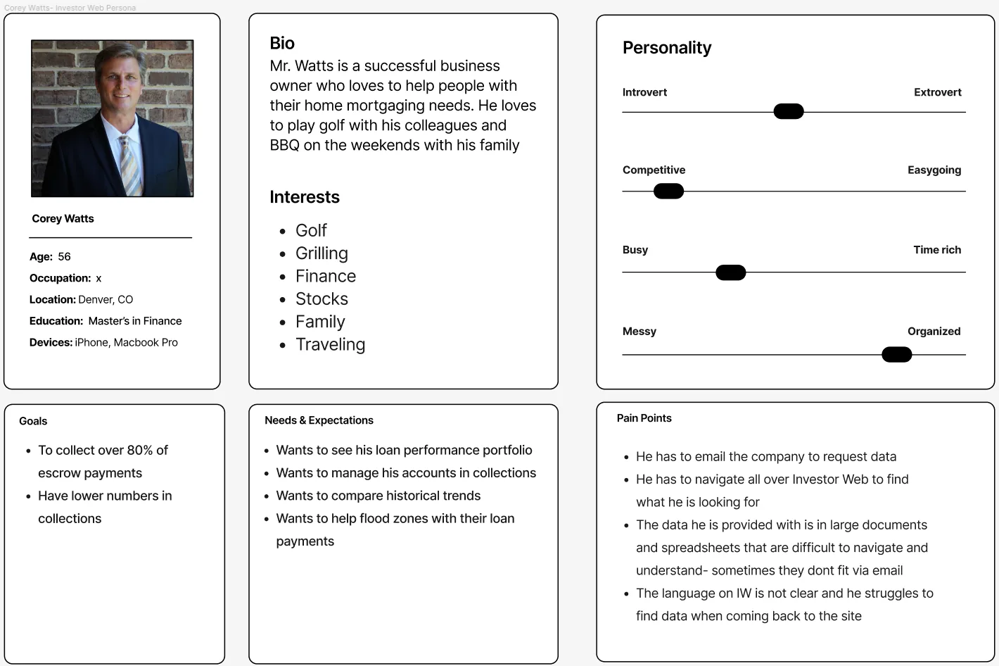
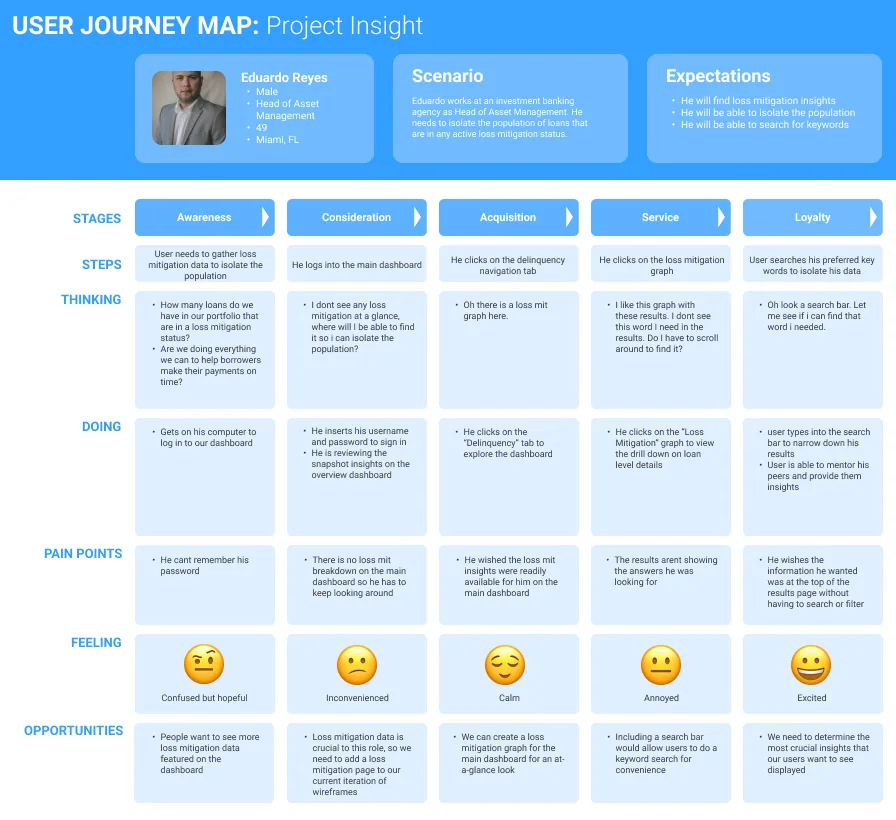
5. Telling the story. Two storyboards showed the experience we were building toward. A new loan is onboarded, the investor checks how it affects their portfolio, and the insight leads them to onboard more loans.
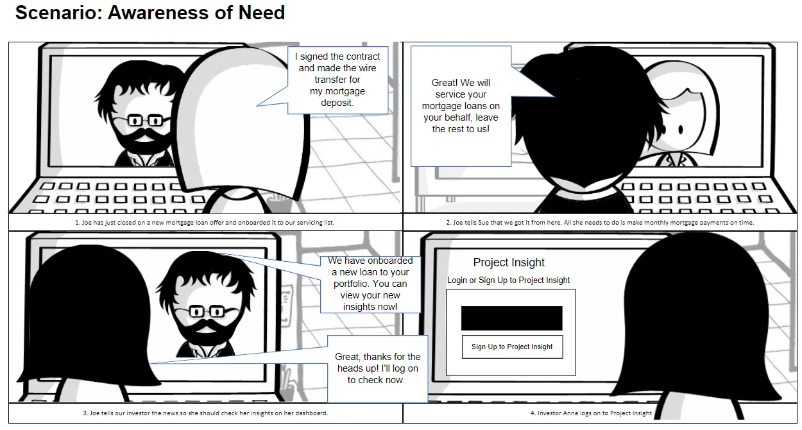
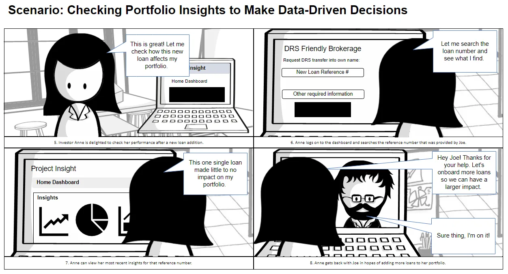
Co-designing the dashboard
I ran in-person dashboarding sessions with the stakeholder, the BSA and the project managers. We sketched on whiteboards what investors needed at a glance and what belonged one click deeper: delinquency, cashflow, escrow, entries and exits, and disasters.
One sticky note from those sessions changed the product:
"Has my portfolio been impacted by natural disasters?"
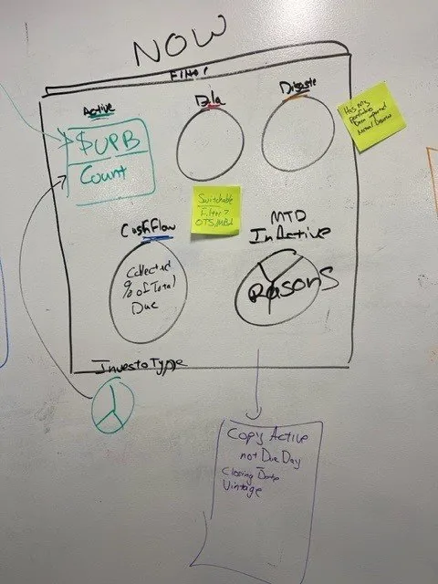
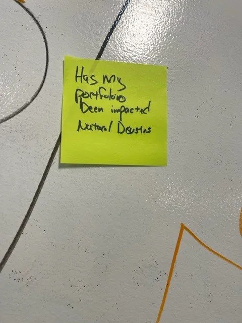
I then mapped the full structure: every tab, every chart, and every drill-down.
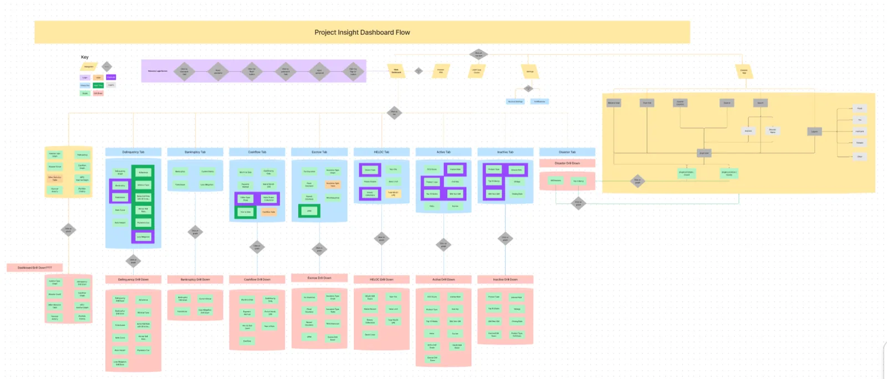
Testing: one dashboard wasn't enough
My first concept (Prototype A) was a single at-a-glance dashboard built around the data points we assumed mattered most.
After 1–2 rounds of low-fidelity usability testing with real investors (5 in total), the pattern was clear: they wanted more data at a glance, including data points we didn't have on the screen at all. So we asked them directly what they needed, and those answers became a secondary navigation of focused dashboards.
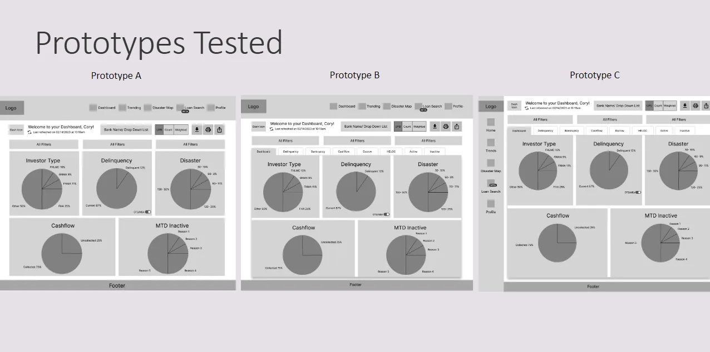
Prototypes B and C differed only in where that navigation lived: two rows of tabs on top, or a side nav plus top tabs.
Finding: investors had no preference about placement. They only cared that the navigation was there.
Decision: I brought this to our weekly meeting, and we went with the version we already had a component for (side nav + top tabs). When users don't care, engineering effort should decide, and this choice saved design and development time.
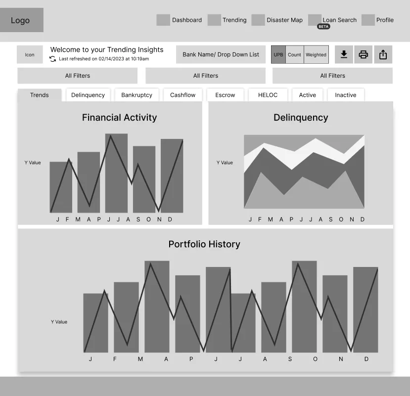
Design decisions
A suite of focused dashboards instead of one crowded screen. Main dashboard, Investor Type, Delinquency, Cashflow, HELOC, Active, Inactive and Disaster, each with drill-downs.
Disasters on their own terms. Disaster data started on the home dashboard, but when nothing was happening it was just noise. I moved it into its own Disaster tab with an embedded FEMA disaster risk map, so investors could research when they needed to, without it being forced on them.
Built for how investors actually work. A UPB / Count / Weighted-average toggle, year, quarter, month and date filters, column editing, plus download, print and email for the people who still need to share a file.
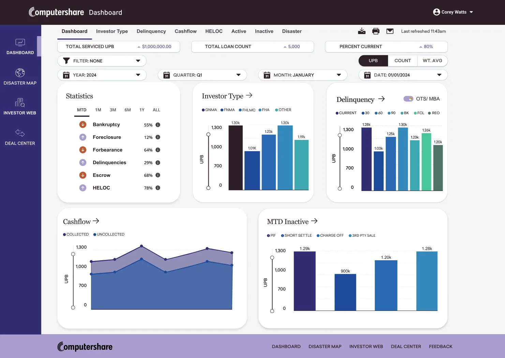
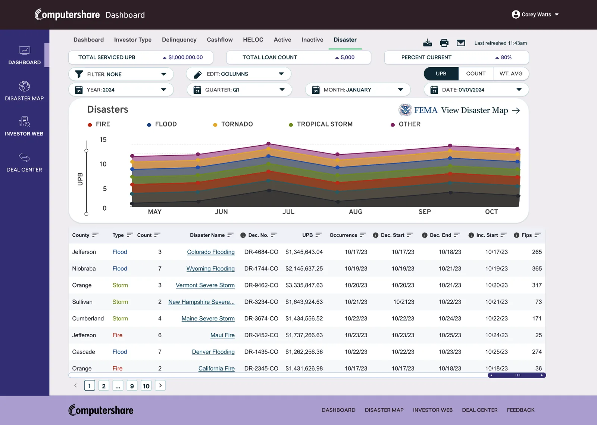
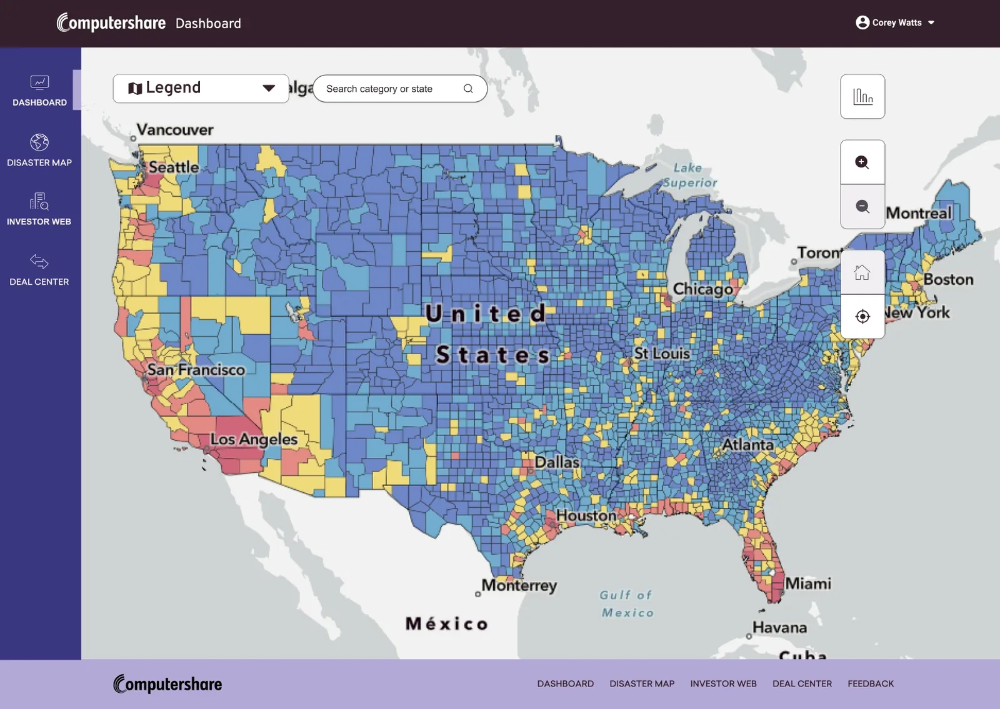
What we didn't build (yet). A loan-level research search engine came up in research. I wireframed it, but we chose to put our effort into getting the dashboards right first.
Outcome
At every fidelity level, low, mid and high, investors reacted the same way:
"How can I access this?" "When is this coming out? I need it now."
The designs were complete and validated, and the data team was already organizing the backend feeds. Then Newrez acquired the company. Newrez already had its own investor tool, so Project Insight was cancelled before development started.
The goal was to replace a 3–5 day manual request process with self-serve, on-demand insight. The research and testing showed investors wanted exactly that.
What I'd do differently today
- Start with a design system: tokens, reusable components, and documented patterns, so the hand-off is dev-ready from day one. Nobody had taught me documentation then; I've since learned it.
- Document every decision as I go, not after.
- Use AI to move faster. I took this to high fidelity before AI design tools existed. Today I'd use AI to speed up synthesis, variations and prototyping, and spend that saved time with users.
Data shown is representative; client information has been anonymized to protect confidentiality.